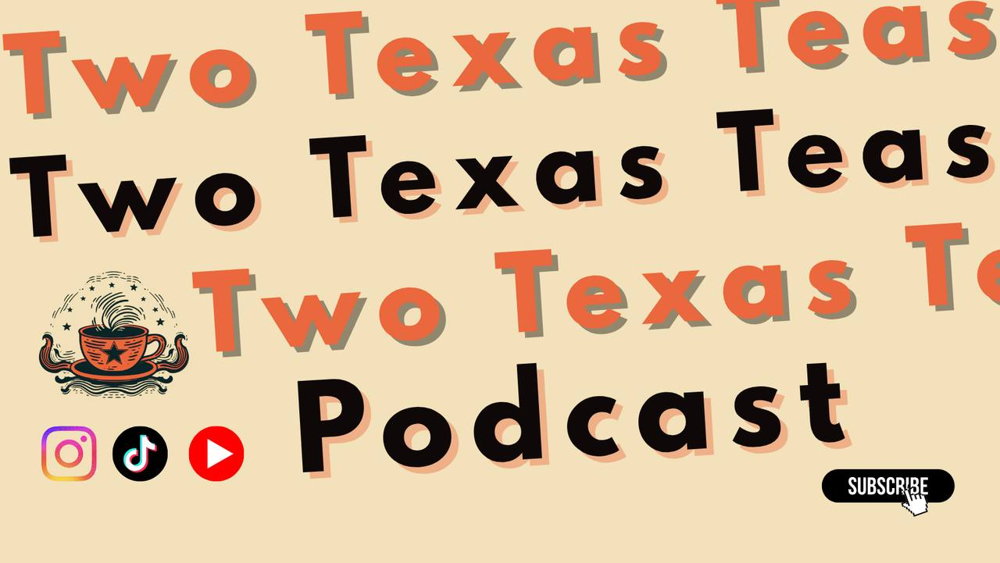
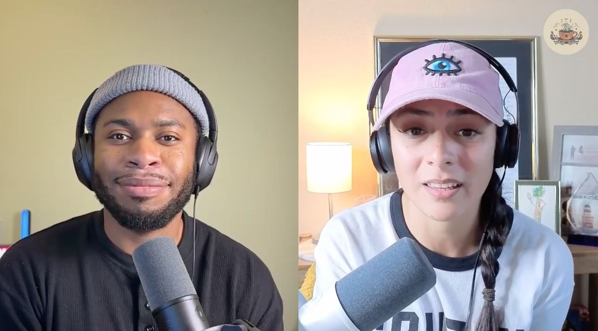

Have a Texas story worth telling? We want to hear it.
Startup founders, entrepreneurs, business owners, and advocates with a story to tell. Our sweet spot is Austin, San Antonio, Round Rock, and the I-35 corridor, but anyone based in Texas or doing business in Texas is welcome to apply.
Fill out the application below. We read every single one.
If it's a fit, we'll send you a link to book a 5-minute intro call to agree on scope.
30 to 45 minute conversation, recorded remotely. Then we handle the rest.

Two Texas Teas covers business, technology, family, politics, government, and allegations (aka cheeseme), with a focus on Central Texas down the I-35 corridor. We're not strict about location. We'll happily have you on if you're from anywhere in Texas, but we want our Texas followers to know what's going on in the area.
We're pretty open about who we bring on. Past guests and topics include:
If you have a story, a business, or something you advocate for, we want to hear from you.
Our interviews are really, really casual. They run 30 to 45 minutes. We generally open by introducing you to the audience, then we let you talk about yourself, give you room to advocate for whatever you want to advocate for, and wrap up with a casual question-and-answer session.
Your hosts are Don and Lawson. Lawson comes from a political and executive leadership background in San Antonio and South Texas. Don is not a Texan, unfortunately. He came here from a faraway place known as the Buckeye State and has gotten involved in municipal government, federal government, venture capital and startups in Austin, and now works in nonprofit. You can learn more about them at twotexasteas.com.
It starts with the application on this page. After you apply, you'll get an email with a link to schedule a 5-minute screening call at a time that works for you. The screening call is usually on Google Meet.
If our rep agrees it's a fit, you'll get another email with a booking link to schedule the actual episode recording. We record on Riverside.fm right now. If that ever changes, we'll let you know in one of those emails.